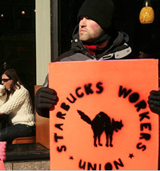

Submitted on Wed, 02/20/2008 - 5:57pm
 FOR IMMEDIATE RELEASE
FOR IMMEDIATE RELEASE
TUESDAY, FEBRUARY 19,
2008
CONTACT:
Matthew Andrews
IWW Organizer
cell:
617-633-1857
email: peopleunite@verizon.net
web:
www.harvestmembers..
This Saturday, February 23rd, fired worker Deon
Furtick will be protesting to get his job back along with concerned Harvest
Co-op members, and supporters from the Industrial Workers of the World. The
picket will be outside a meeting of the Harvest Co-op's board of directors, at
the Paulist Center, 5 Park Street, from 8:00am to 4:00pm. Harvest board members
are having a day long "retreat" to develop "long term objectives and hopes for
the board's work and Harvest"
(http://www.harvest.coop/board/agenda01_08.pdf).
Submitted on Wed, 02/06/2008 - 3:35pm
Union membership rising
The Bureau of Labor Statistics reported the largest rise in the number of U.S.
workers belonging to labor unions in the last quarter-century. In 2007 the
rolls increased by 311,000 for a total of 15.7 million workers, despite a
decline in manufacturing jobs, particularly in auto.
Submitted on Tue, 01/29/2008 - 1:35pm
 Andrew Serwer
Andrew Serwer
Managing Editor
Fortune Magazine
1 Time Warner Center
New York, NY 10019
January 28, 2008
Dear Mr. Serwer,
I take serious issue with the erroneous information regarding
Starbucks in Fortune Magazine's 2008 '100 Best Companies to Work For'.
I am especially concerned about the reliability of Fortune given that
the IWW Starbucks Workers Union wrote you an open letter
before the 2007 '100 Best Companies to Work For' feature that pointed
out the very same misinformation which you proceeded to include once
again in the 2008 list.
The 2008 'Best Companies to Work For' list claims that the most
common hourly job at Starbucks is a mysterious position called
"Coordinator III" which takes in $37,390 per year. Once again, the most
common hourly job at Starbucks, by far, is a position called "Barista"
which likely takes in approximately $12,000 per year on average. The
precise average pay for baristas is not known since Starbucks refuses
to make that information public.
Submitted on Tue, 01/29/2008 - 1:25pm
Disclaimer - The opinions of the author do not necessarily match those of the IWW. The image pictured to the right did not appear in the original article, we have added it here to provide a visual perspective. This article is reposted in accordance to Fair Use guidelines.
By Elizabeth Manapsal - Cornell Daily Sun, January 28, 2008
 Companies are finding even more ways to screen job applicants — by
checking club discussion boards. Starbucks Corp., the nation’s leading
coffee retailer, is under scrutiny after a series of e-mails revealed
the company’s anti-union practices. The pinnacle of the events in
question came when Starbucks managers read through the discussion
boards on Cornell Organization for Labor Action’s website in order to
identify job applicants and current employees that were labor
activists.
Companies are finding even more ways to screen job applicants — by
checking club discussion boards. Starbucks Corp., the nation’s leading
coffee retailer, is under scrutiny after a series of e-mails revealed
the company’s anti-union practices. The pinnacle of the events in
question came when Starbucks managers read through the discussion
boards on Cornell Organization for Labor Action’s website in order to
identify job applicants and current employees that were labor
activists.
In a series of e-mails uncovered by The Wall Street Journal,
Starbucks managers pulled names from the discussion board and then
cross-referenced them with an employee database. They found that three
employees were members of the University’s School of Industrial and
Labor Relations and active union supporters, and asked executives if
they could inform local managers of the workers’ identities.
Submitted on Thu, 01/24/2008 - 7:23pm
Disclaimer - The opinions of the author do not necessarily match those of the IWW. The image pictured to the right did not appear in the original article, we have added it here to provide a visual perspective. This article is reposted in accordance to Fair Use guidelines.
By COLIN MOYNIHAN, New York Times - January 22, 2008

The dramatic battles of the American labor movement were often fought
in hazardous settings like the coal fields of Kentucky or the textile
mills of Massachusetts.
In recent times, though, a different type of labor dispute has
become familiar in New York, focused on the retail outlets that keep
upscale customers fed and caffeinated.
And so it was that a crowd of about 50 people wrapped in scarves and
bandannas against the cold gathered Monday morning outside a Starbucks
at the corner of Fifth Avenue and East 33rd Street.
As their breath steamed the air, they chanted and sang. They carried
long banners bearing the logo of the Industrial Workers of the World, a
union founded in 1905 that has been trying to organize Starbucks
workers since 2004.